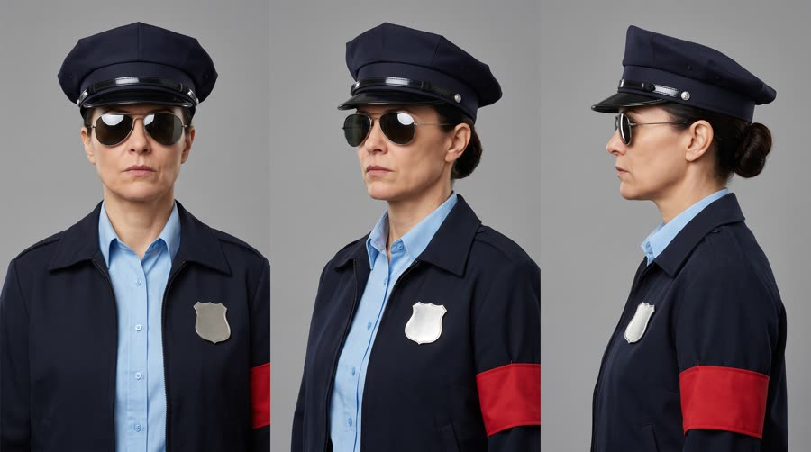
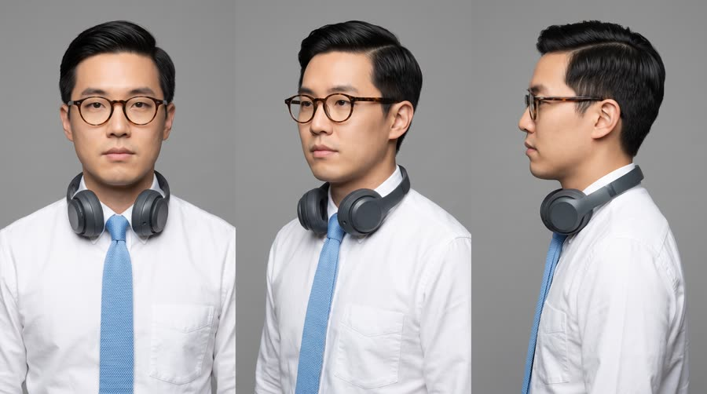
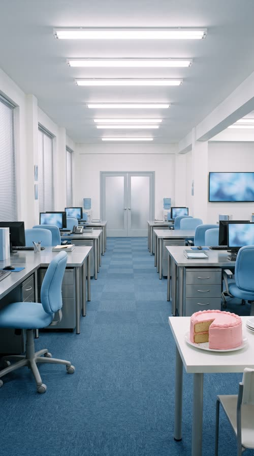

Sugar Police
The Sugar Police raid an open-plan office, confiscating muffins desk by desk, until the officer's detector reaches the one desk that passes inspection: Red Bull Sugarfree gets a salute.
Humour buys the first three seconds on cold traffic and gets rewatched and shared (25% of ads spending $1M+ use humour against 14% of social ads). It sells when the product IS the punchline, so remembering the joke means remembering the brand. It fails when the joke could be about anything.
Contact sheet
One keyframe per shot, with the caption as it will appear.


Cast and world

Voice: clipped, flat, total authority, American, like a TV cop reading a warrant

Voice: mild, dry, completely unbothered, American

World. A bright open-plan office at the fictional logistics company Pellwick & Co on an ordinary Tuesday, mid-morning. A uniformed officer of the fictional Sugar Enforcement Unit conducts a completely serious raid. Palette. Built from the can: sky-blue carpet tiles and chairs, brushed silver desks and white walls; the officer's red armband is the single loud accent.
Fictional brands. Pellwick & Co (the office, never shown as text); Sugar Enforcement Unit (the officer's unit, never shown as text; the badge and armband stay blank)
Beats
| Time | Beat | What happens |
|---|---|---|
| 0-2.2 | hook | Glass doors burst open: a uniformed officer with a detector wand announces a Sugar Police raid. |
| 2.2-8.4 | setup | Rule of three: the office freezes mid-bite, Gary is made to drop his muffin, she marches down the aisle with an armful of confiscated pastries. |
| 8.4-15.2 | product | She reaches Theo's desk. The detector hovers over his can and goes quiet with a soft green light. He names it. |
| 15.2-18.6 | turn | She lowers her sunglasses and salutes the can. |
| 18.6-24.4 | payoff | The detector shrieks: she dives across the break table at a birthday cake while Theo sips, unbothered, in the foreground. |
| 24.4-30 | cta | The can on his desk; a red CLEARED stamp slams down beside it; tagline. |
Screenplay
28 spoken words in 30 s. Each line keeps its intent (fixed in the template) and its wording (written for this product).
| Time | Speaker | Line | Intent (template) |
|---|---|---|---|
| 0.3-2.0 | Officer | Sugar Police. Nobody move. flat, loud, total authority, wand raised | Hook: the absurd authority announces the premise in one breath. |
| 4.0-5.6 | Officer | Drop the muffin, Gary. calm, cold, like a hostage negotiator | Escalation one: the premise is enforced on an ordinary person over something small. |
| 8.6-9.8 | Officer | And what's this? slow, suspicious, leaning in | Set up the punchline: the authority reaches the hero and suspects the product. |
| 12.3-14.9 | Theo | Red Bull Sugarfree. Helps me focus. No sugar. mild, matter-of-fact, not looking up from his screen until the last two words · Say: RED BULL SHUG-er-free, three clear words | Product line: the calm hero names the product and the one benefit that beats the premise, allowed claim only. |
| 17.0-18.3 | Officer | Carry on, citizen. quiet, grave, mid-salute | Turn: the authority approves the product, the premise flips into respect. |
| 19.4-20.6 | Officer | Is that frosting?! sudden bark, whipping round | Payoff button: the premise snaps back somewhere else, the hero is untouched. |
| 27.2-29.4 | Theo (off camera) | Wiiings without sugar. dry voiceover, the faintest smile in it · Say: WINGS, stretch the vowel slightly | Tagline in the brand's own words. |
Generation plan
U1 · 0 to 8.4 s · 9 s generation
Shots S01, S02, S03, S04 · References: dolores card, office plate, S01 keyframe as first frame
9:16 sitcom comedy sketch, bright high-key office light, crisp digital, locked-off tripod shots, everyone completely deadpan. Shot 1 (0 to 2.2 s): wide symmetrical shot down the office aisle of @Image2, frosted glass doors burst open and @Image1 (Dolores, navy police-style uniform, peaked cap, mirrored aviators, red armband with no writing) strides in with a matte black detector wand raised and says flatly and loudly: "Sugar Police. Nobody move." Shot 2 (2.2 to 3.8 s): three office workers freeze mid-bite with a doughnut, a chocolate bar and a cookie, staring at camera, perfectly still. Shot 3 (3.8 to 6 s): @Image1 points the wand at a sheepish man in a mustard cardigan holding a blueberry muffin, the wand light blinks red with a beep, she says coldly: "Drop the muffin, Gary." He lowers it into a grey bin. Shot 4 (6 to 9 s): @Image1 marches toward camera down the aisle with a tall stack of plain white pastry boxes under one arm, sweeping the wand across desks. Native sound: doors banging, office murmur cutting dead, fluorescent hum, wand beeps, boots on carpet. No music. No text on screen, no writing on food, badges or boxes.
U2 · 8.4 to 15.2 s · 7 s generation · exact-risk (short, cheap to re-roll)
Shots S05, S06, S07 · References: product can official, theo card, dolores card, S05 keyframe as first frame
9:16 sitcom comedy sketch, bright office, locked-off shots, deadpan. Shot 1 (0 to 1.8 s): @Image2 (Theo, glasses, sky-blue tie, headphones on neck) types calmly at his silver desk while @Image3 (Dolores in navy uniform and aviators) looms over him with a matte black detector wand and says slowly: "And what's this?" The exact can from @Image1 stands upright on his desk. Shot 2 (1.8 to 3.6 s): locked macro insert, the wand tip hovers above the exact can from @Image1, its round light turns soft green with one gentle chime, then silence. Shot 3 (3.6 to 7 s): close-up of @Image2 lifting the can to chest height, label to camera, saying mildly: "Red Bull Sugarfree (said RED BULL SHUG-er-free, three clear words). Helps me focus. No sugar." Keep the can's shape, colours, wordmark and bulls exactly as @Image1. Native sound: keyboard clicks, the chime, room tone. No music.
U3 · 15.2 to 24.4 s · 10 s generation
Shots S08, S09 · References: dolores card, theo card, product can official, S08 keyframe as first frame
9:16 sitcom comedy sketch, bright office, locked-off camera. Shot 1 (0 to 3.4 s): @Image1 (Dolores, navy uniform, peaked cap) slowly lowers her aviator sunglasses, looks at the can in @Image2's (Theo's) hand, straightens and snaps a crisp formal salute, gravely: "Carry on, citizen." Theo gives one small nod. Shot 2 (3.4 to 10 s): deep two-plane shot, Theo in the sharp foreground at his desk; behind him the detector wand suddenly shrieks and glows red, Dolores whips round and barks: "Is that frosting?!", then dives headfirst across a break-room table toward a plain pink frosted cake with no writing while two co-workers jump back; in the foreground Theo calmly takes one sip from the exact can from @Image3, label toward camera, unbothered. Normal gravity, level horizon, the dive moves away from camera. Native sound: snare-like salute snap, alarm shriek, crash, the calm sip. No music. No text.
U4 · 24.4 to 30 s · 6 s generation · exact-risk (short, cheap to re-roll)
Shots S10 · References: product can official, S10 keyframe as first frame
9:16 clean pack shot. Locked-off with a very slow push-in onto the exact can from @Image1 standing upright on a tidy brushed silver office desk, label to camera, condensation drops, the brightest object in frame, matte grey headphones and a keyboard edge beside it, a blurred bright sky-blue office behind where a co-worker walks past out of focus. The can does not move or change. Keep the desk surface to the right of the can and the space above it empty. Native sound: soft office room tone. No music, no text.
Sound, music, voice, captions
| 0 to 10.2 s | raid | 70s cop-show parody: tight wah guitar, clavinet and stabbing brass, 104 bpm in E minor, drops out completely under each spoken line and punches back in between them. |
| 10.2 to 18.6 s | inspection | Music cuts dead on the green chime; a single suspended bass note under Theo's line; one heroic brass fanfare hit on the salute. |
| 18.6 to 30 s | chaos and button | Full cop-funk chase riff under the dive, then a hard stop on the stamp and a two-bar brass button that resolves under the tagline. |
Added sound
- 4.1 s: short red-alert beep from the wand (the viewer must learn what the detector does before it scans the product)
- 10.6 s: soft rising approval chime (the punchline of the product moment; the contrast with the beep is the joke)
- 19.0 s: loud alarm shriek (triggers the payoff gag)
- 25.4 s: rubber stamp thump (lands the CLEARED stamp CTA)
- Officer: native voice in U1, then her U1 vocal stem as voice reference for U2 and U3
- Theo: native in U2; the tagline voiceover uses his U2 stem as voice reference, recorded dry
font: Archivo Black, size: 5.6% of frame height, color: #FFFFFF, active word: #FFD400 yellow on the word being spoken, shadow: hard 3px black outline plus 0 3px 0 rgba(0,0,0,.5) drop, box: False, position: centre, 70% down the frame, above the platform UI safe zone, max words on screen: 3, case: UPPERCASE, punchline rule: punchline words pop in with a 110% scale bounce over 4 frames; silent gags get no caption
Post text- 25.4 to 30 s: CLEARED / (red rubber-stamp mark, Archivo Black in a double-ruled rectangle rotated 8 degrees, slams in at 130% scale and settles to 100% over 5 frames in the empty desk space right of the can, slight ink texture)
- 26.6 to 30 s: Red Bull Sugarfree / Wiiings without sugar (Archivo Black white with a hard black outline, centred in the empty space above the can, pops in with a 4 frame bounce)
Adaptation contract
How this same concept takes any physical product.
| Product type | Where it sits in the story | Scale |
|---|---|---|
| ingested | the detector scans the drink on his desk and goes quiet; the officer salutes it | hand |
| applied | the detector scans the tube or jar on the desk (balm, sunscreen, hand cream); the officer salutes it | hand |
| worn | the detector sweeps his body, stops at the item he is wearing (sneakers, watch, glasses) and goes quiet; salute | body |
| handheld | the gadget in his hand passes the scan (earbuds, bottle, charger); salute | hand |
| carried | she searches his bag and finds only the product inside, neatly packed; salute | hand to lap |
| home | the raid moves to a living room; the detector passes the one item in the room (chair, lamp, blanket); salute | room |
| consumable | she opens his desk drawer expecting contraband and finds the product's refill pack; salute | hand |
Style bible
Look. Sitcom and sketch-show look: bright high-key frames, symmetrical staging, characters placed centre frame so the joke reads on a phone, one gag per shot, the straight man always calm and in focus, the absurd character always in full costume and dead serious. Reactions get their own shot. The product sits in the calm character's hand, lit clean.
Camera. Locked-off tripod for every joke (comedy is funnier when the camera does not move), 24 to 28mm for group gags so bodies and props read, 50mm for reaction close-ups, one fast whip pan or crash zoom per sketch as the escalation button, a locked macro insert for the product. Eye-level, never Dutch.
Light and texture. Even, bright, slightly overexposed studio-sitcom light with soft shadows; practical overhead office or kitchen fixtures in frame; the product gets a small extra kicker so it is the cleanest object in the shot. Clean digital, crisp, no grain, saturated but natural skin, slight bloom on white surfaces. Looks like a well-lit comedy show, not a film.
Pacing. Premise lands in under 2 seconds (costume plus one line). Rule of three: two escalations, then the product breaks the pattern. Hold 0.4 s of silence before every punchline and after every reaction (build the pause with a cut, never ask the model to act a pause). Product held at least 1.5 s in a clean insert. Last 5 seconds: one final visual gag in the background while the product sits calm in the foreground, then the tagline.
Sound. Native room tone and dialogue from the generations, dry and close, no reverb. A parody score cue in the genre of the premise (here a 70s cop-show brass and wah funk) that stops dead for punchlines. Added sound only for props the joke depends on (the detector beep, the approval chime, the alarm shriek).
Known failures.
- models cannot do comic timing: never write 'pauses for effect'; build every pause as a cut or a held freeze in the edit
- faces go goofy or mugging when you say 'funny': ask for 'deadpan, completely serious' and let the premise be the joke
- a costume with a badge or patch invents text: say plain silver badge with no engraving, armband with no writing
- gadget props grow screens with fake readouts: say matte black wand with one round light, no screen, no text
- cakes and pastries get writing piped on them: say plain frosting with no writing
- the product in the calm character's hand becomes a generic can: keep it in a locked insert and pass the product reference every time it is visible
- group gags go soft and unreadable at phone size: max three people in a gag frame, centre the joke
- a mid-air dive rendered from a side angle can come back rotated: frame dives from the front at three-quarter angle, level horizon, normal gravity
- the hook shot came back with the absurd character tiny in the far background: say she stands large in the centre, knees up, about two metres from camera, and dominates the frame
- background extras in product inserts and pack shots stare at camera and pull focus (and can drift off-brief in casting): say empty blurred background with no people
- even with 'large in the centre' the model kept her tiny when the prompt also said 'wide' and 'down the aisle': describe the framing by body coverage ('fills the frame from knees to cap') and never mention the depth of the room
Claims and cost
Claims used (all from the product page): Caffeine helps to improve concentration and increase alertness; Same benefits of the original Energy Drink, without sugar (tagline form)
Video estimate: 32 s of generation at $0.27/s = $8.64 first pass, $20 to 30 with retakes, plus about $1.5 music.